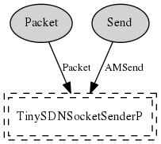

Component: TinySDNSocketSenderC
generic configuration TinySDNSocketSenderC(tinysdnsocket_id_t collectid, tinysdnsocket_id_t controllercollectid)
The virtualized collection sender abstraction.
- Author:
-
Kyle Jamieson
-
Philip Levis
- Date:
-
April 25 2006
- See:
-
TinyOS Net2-WG
Provides
Wiring
